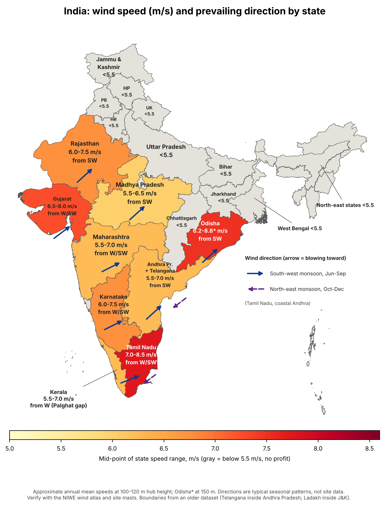

Where India stands
- Target: 140 GW of wind by 2030.
- Generation: 106 billion units in FY2025-26, up from 83.
- Turbine manufacturing: about 24 GW a year.
- Makers: Suzlon, Siemens Gamesa, Vestas, Envision, GE Vernova.
Wind renewable energy · India · as of Nov 2026
Capacity, state-wise wind speeds and direction, profit zones, formulae, licensing and selling routes, in one place.
Add 6 to 8 GW a year onshore, move to taller turbines and hybrids, and open offshore later.
Offshore: Gujarat and Tamil Nadu are priority zones, but no offshore project has been awarded yet. Estimated offshore tariffs are near Rs 9.6 to 10.5 per kWh.
Seven states hold 99% of installed wind. Rajasthan has the most untapped potential.
| State | Installed MW30 Jun 2026 | Generation FY26million units | Potential 120 mGW | Potential 150 mGW | Installed share |
|---|
National total: 57,443 MW (June 2026) and 59,201 MW (September 2026). Gujarat reached 17,044 MW by September. Generation for the other states was not listed in the source.
Indicative annual mean speed (m/s) by state, with prevailing seasonal wind direction.

Power rises with the cube of wind speed. A site 10% windier gives about 33% more power.
P = ½ · ρ · A · v3
ρ air density (about 1.18 kg/m³), A swept area (m²), v speed (m/s)P = ½ · ρ · A · v3 · Cp · η
Cp up to 0.593 (Betz limit); real turbines 0.40 to 0.48A = π(D/2)2 WPD = ½ ρ v3 (W/m²)
ρ = p / (R · T)
R = 287 J/kg·K, T in kelvin. Hot, high sites lose output.v2 = v1 · (h2 / h1)α
α about 0.14 on open land, 0.20 to 0.30 in rough terrainf(v) = (k/c)(v/c)k-1 e-(v/c)k
k usually 1.8 to 2.5; c about 1.12 × mean speedCUF = E / (Prated × 8760)
E = Prated × 8760 × CUF; revenue = E × tariffLCOE = Σ (It + O&Mt)/(1+r)t ÷ Σ Et/(1+r)t
Turbine spacing: 3 to 5 D across the wind, 5 to 9 D along it.Pick the revenue route first, then the site. Tariff and grid access decide returns more than turbine choice.
Rs 3.43 to 3.97 /kWh
25-year PPA through SECI, SJVN or a state DISCOM. Best for developers of 50 MW and above who want low risk.
About Rs 4.2 to 5.0 /kWh*
Industrial co-owners hold at least 26% and use 51% of the output. Good for mid-size developers with factory customers.
Negotiated
Bilateral contract with a commercial buyer of 100 kW or more. Needs strong customer ties.
Avoided grid tariff
Offsets your own bill. Suits factories, data centres, cement and steel.
Existing or new sale
Replace 1990s and 2000s turbines with 3 to 5 MW machines on the same land in Tamil Nadu and Gujarat.
About Rs 4.4 to 4.65 /kWh*
Wind plus solar plus batteries for firm or peak supply to round-the-clock buyers.
* Approximate practitioner figures, not official prices.
Most wind states average 6 to 7 m/s at 100 m. The best sites in Tamil Nadu and Gujarat exceed 8 m/s.
Ranges are indicative annual means at 100 to 120 m (approximate); Odisha is at 150 m. Replace them with site measurements. Speeds peak in the south-west monsoon (May to September). Offshore: about 220 GW at 7.0 m/s or more at 150 m, falling to 92 GW at 7.5 m/s (TERI).
Install where the annual mean is 7 m/s or more. Marginal at 6 to 7 m/s. Unprofitable below about 5.5 m/s.
Southern Tamil Nadu (Tirunelveli, Tuticorin, Kanyakumari, Palghat Gap); Kutch, Jamnagar, Rajkot and Surendranagar in Gujarat; Jaisalmer, Barmer and Jodhpur in Rajasthan; Gadag, Chitradurga and Koppal in Karnataka.
Highest energy per MW, existing substations, mature supply chain.Satara, Sangli, Dhule and Ahmednagar in Maharashtra; Anantapur, Kurnool and Kadapa in Andhra Pradesh; Dewas, Mandsaur and Neemuch in Madhya Pradesh; Telangana; Odisha ridges.
Needs low-wind turbines and tall towers; works at tariffs near Rs 3.8 or in group captive.Indo-Gangetic plains (Punjab, Haryana, UP, Bihar, West Bengal), most of the North-east, Himalayan valleys and dense city belts.
Energy yield is too low to repay capex at current tariffs.Forest and wildlife sanctuaries, eco-sensitive Western Ghats cores, bird routes, land near defence sites or airports, flood-prone coasts and grid-saturated pockets.
MNRE tightened defence NOC compliance in October 2026.No generation licence is needed because generation is delicensed under the Electricity Act, 2003. You do need a chain of approvals. Forms, fees and timelines differ by state.
Offshore wind: MNRE is the nodal ministry and NIWE the nodal agency. Check tax and land-law points with a chartered accountant and a lawyer.
Six ways to sell wind power. Auctions are simplest; group captive and open access pay more but carry buyer risk.
| Route | How it works | Key condition | Recent price |
|---|---|---|---|
| Central auction SECI, SJVN, NTPC, NHPC | Reverse auction, letter of award, 25-year PPA | Developer finds land and builds the line to the delivery point | Rs 3.64 to 3.69 (XIX, SJVN); Rs 3.78 to 3.85 (XX) |
| State DISCOM auction | Same process, led by GUVNL, MSEDCL and others | State commission adopts the tariff | Rs 3.43 to 3.44 (GUVNL X, Dec 2025) |
| Group captive | Industrial users co-own the plant | Owners hold at least 26% and use 51% of output | Negotiated |
| Open access / third party | Wheel power to a buyer of 100 kW or more | Open access permission; wheeling and banking charges | Negotiated |
| Power exchange | Green Term Ahead Market or day-ahead market | Registration with exchange and load despatch centre | Market price |
| REC | Sell the green certificate to buyers with a Wind RCO | Registration with the REC registry | Market price |
EMD, guarantee and net-worth amounts differ by tender and are set in each RfS.
Capacity, potential, tariff and policy figures come from the sources below. Wind-speed ranges, wind directions, zone rules, capex, break-even CUF and captive prices marked approximate are practitioner estimates; verify before investing.